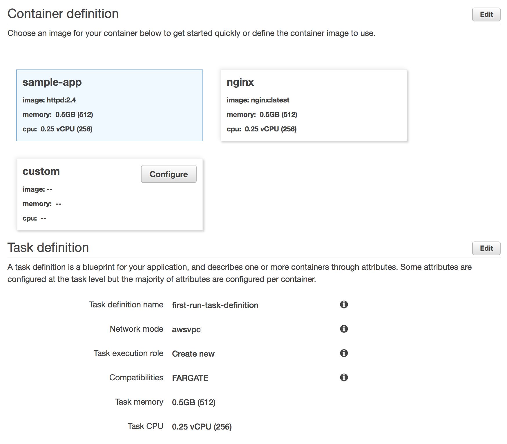
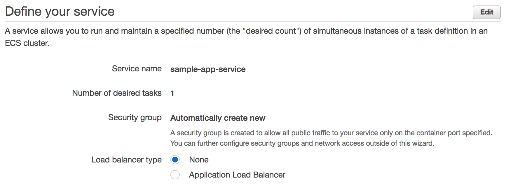
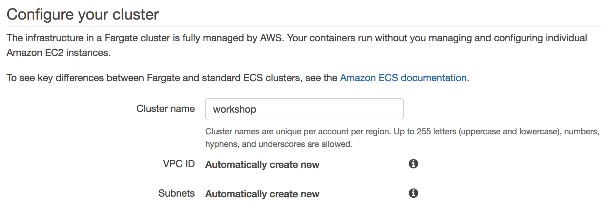
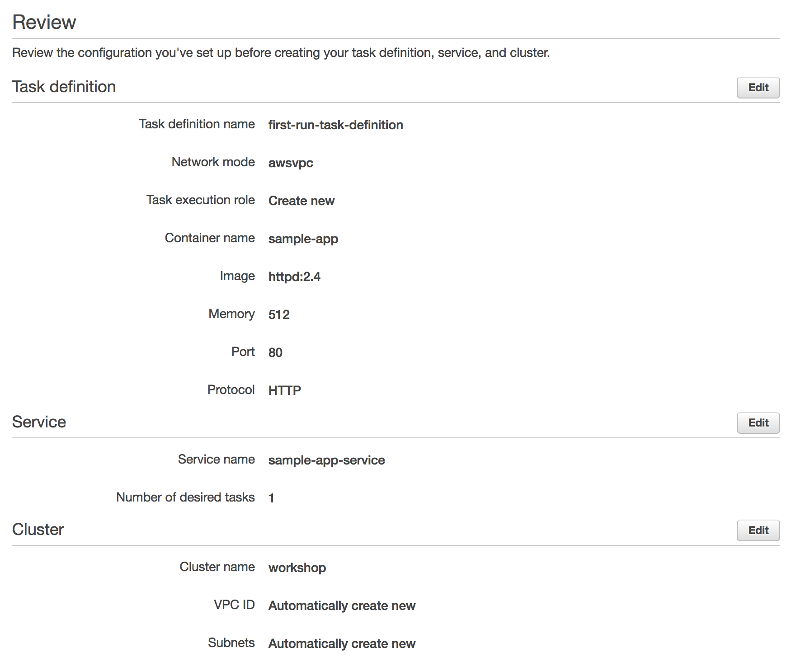
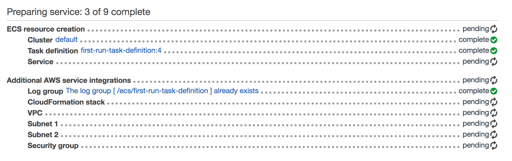
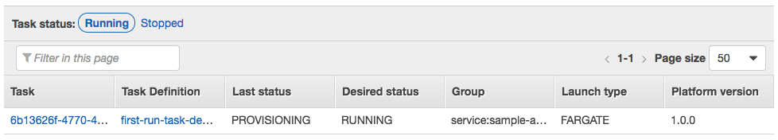
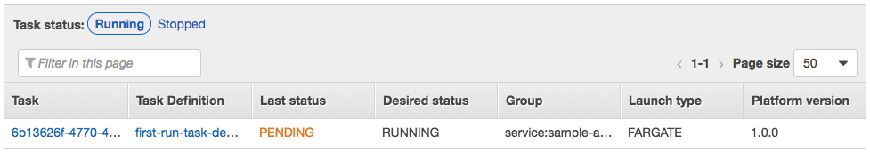
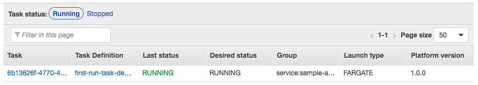
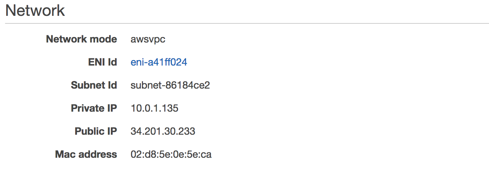
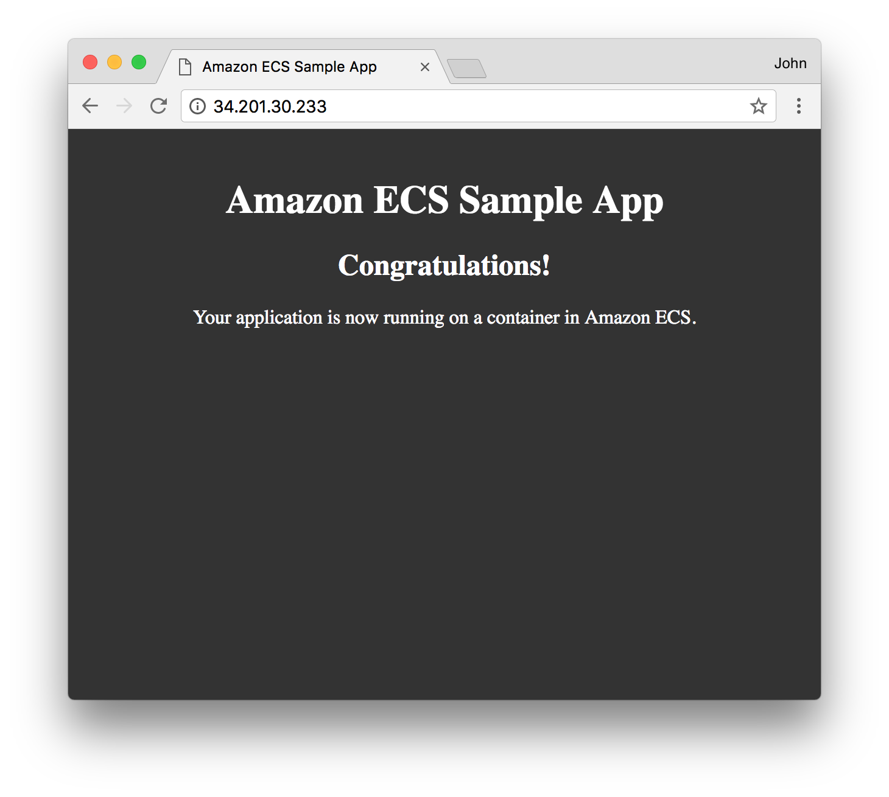

In this module, you’ll create your first Amazon ECS cluster, define a task definition and a container definition, and deploy a service onto the cluster from these definitions..
| Object | Description |
|---|---|
| Cluster | Logical grouping of tasks and services. Infrastructure may be shared between tasks and services running on the same cluster. |
| Task Definition | Blueprint for our application. Defines attributes such as CPU and memory requirements, networking configuration, and container definitions. |
| Container Definition | Configuration for a container to run as part of our task. Defines attributes of the container including port mappings, resources requirements, environment variables, etc. |
| Service | Maintains a specified number of running simultaneous instances of a task definition in an ECS cluster |
You’ll deploy a service via Amazon ECS using AWS Fargate as the launch type. The Fargate launch type allows you to run your containerized applications without the need to provision and manage the backend infrastructure. Amazon ECS also can launch tasks and services using the EC2 launch type which runs containerized applications on Amazon EC2 instances that you manage. Amazon ECS is the orchestration service responsible for running docker containers and AWS Fargate is the underlying compute platform where the containers will run.
Ensure that you’ve followed the setup guide before starting this module. For this section, you’ll require an IAM user with access to create and modify resources in the following services:
Using the Amazon ECS first run wizard, create an ECS cluster, define a new task definition for a Hello World application, and deploy it as a service onto the new cluster.
✅ Step-by-step Instructions
Go to the AWS Management Console, click Services then select Elastic Container Service under Compute. If you’ve never used the service before, you’ll see a Getting started button which will take you to the first run wizard. If you do not see this button, navigate to the wizard directly.
The first page of the wizard outlines configuration details to build our new task definition. We’re going to leave the defaults, but read through them to see what’s being configured. It will define a new task definition with a container definition for sample-app which is a container running Apache httpd with a splash page. Note that the task will run using the FARGATE launch type and it is configured for 0.5GB of RAM and 1/4th of a vCPU. Click Next.

The next page outlines configuration details for our service. By default it will create an app called simple-app-service running a single task in a new security group. Note we can optionally create a load balancer here to distribute traffic across tasks in our service. We won’t do this here but will later in the workshop. Leave the defaults and click Next.

The last page of the wizard allows us to name our cluster. Enter workshop into Cluster name. Click Next.

Review the details of the new task definition, service, and cluster on the next page and click Create.

The first run wizard will create the task definition, service, and cluster and all supporting infrastructure. It will show you its progress as it runs:

Once complete, click View service.
Click on the Tasks tab to see the tasks running by the service. The task status will transition from PROVISIONING to PENDING to RUNNING as the task is placed within AWS Fargate, the container is pulled and started. Click the refresh button while the task starts.
  
Once started, click the ID of the task in the Task column. This will show you task details including networking configuration:

Note the Public IP of the task.
Open a web browser and navigate to the Public IP of the task. You’ll see the Hello World splash page:

🔑 The Fargate launch type allows us to run Docker containers without managing the underlying instances. Amazon ECS is the orchestration system responsible for running our containers using AWS Fargate.
🛠️ We’ve created a new Amazon ECS cluster and deployed a service for the Hello World application using the Fargate launch type onto that cluster.
✅ Proceed to the next module, Create a Docker Image Repository, wherein you’ll create a new Docker image repository in Amazon ECR.